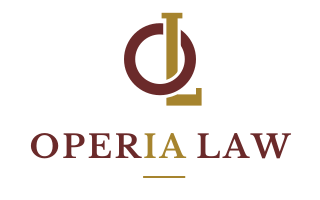
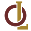

Operia Law
Versão plana da marca, com o monograma OL e o IA de Operia em ouro. É o sinal de que o sistema trabalha com agentes de inteligência artificial.
Cabeçalho
Documentos, em uma cor
Login e capa

Fundo vinho
Símbolo, do favicon ao selo
32 px

48 px96 px
ícone
Cores
#6B2A2Avinho
#A6842Eouro
#C4A35Aouro claro
#F7F4EFpapel
Onde usar
- Horizontal no topo do sistema e no papel timbrado, com pelo menos 40 px de altura, para o IA em ouro continuar legível.
- Horizontal em vinho no e-mail, no rodapé de PDF e na impressão de uma cor só. Aí o IA perde a cor e o nome segue inteiro.
- Empilhado na tela de login e na capa de proposta.
- Símbolo como selo e marca d'água. O ícone quadrado é o favicon e o atalho do celular.
- Negativo na barra escura e em fundo vinho. O ouro claro só entra aí, em área grande.